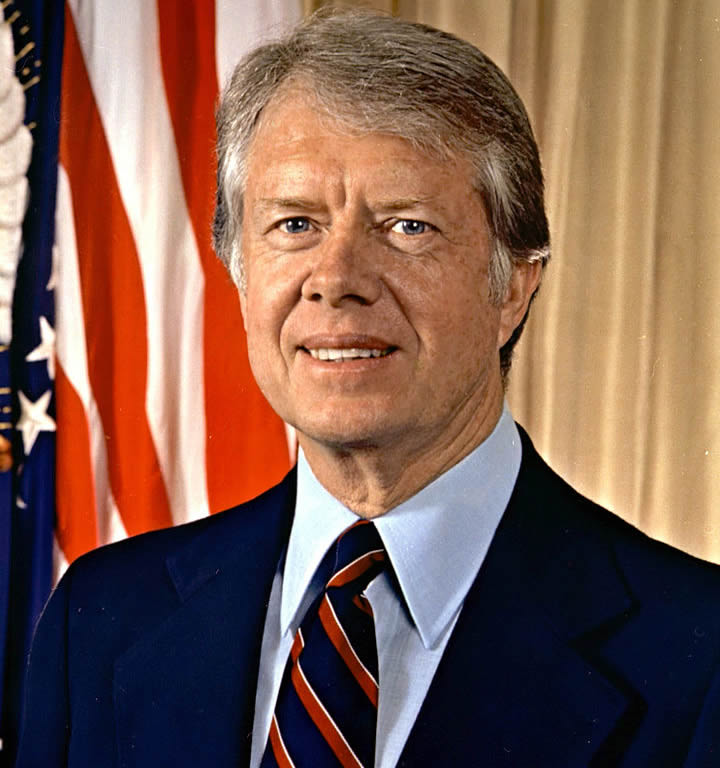

Jimmy Carter - President and Humanitarian.

39th President of the United States
The life and times of Jimmy Carter
- Born: October 1, 1924 (age 93 years), Lillian Carter Health & Rehabilitation, Plains, GA.
- Presidential term: January 20, 1977 – January 20, 1981
- Graduated from the United States Naval Academy in 1946 with a Bachelor of Science degree and joined the United States Navy, where he served on submarines.
- Carter was fueled by the political climate of racial segregation and the growing civil rights movement. He became a motivated activist within the Democratic Party. From 1963 to 1967, Carter served in the Georgia State Senate, and was elected as Governor of Georgia. Carter remained in his position as Governor until 1975.
- Carter won the 1976 Democratic presidential nomination and entered the presidential race as the dark horse candidate. In the presidential election, Carter defeated incumbent Republican President in a close election.
- In 2012, Carter surpassed Herbert Hoover as the longest-retired president in U.S. history. He is also the first president to mark the 40th anniversary of his inauguration. He set up the Carter Center in 1982 as his base for advancing human rights.
- He has vigorously opposed the Supreme Court's decision in Citizens United v. FEC to strike down limits on campaign spending by corporations and unions, saying that the U.S. is "no longer a functioning democracy" and now has a system of "unlimited political bribery".